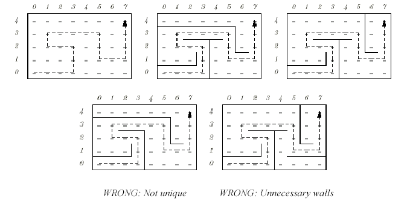

Home Page
F.A.Qs
Statistical Charts
Past Contests
Scheduled Contests
Award Contest
| Online Judge | Problem Set | Authors | Online Contests | User | ||||||
|---|---|---|---|---|---|---|---|---|---|---|
| Web Board Home Page F.A.Qs Statistical Charts | Current Contest Past Contests Scheduled Contests Award Contest | |||||||||
|
Language: Tester Program
Description Tester Program
For this contest, we first designed the following problem (note that you do not have to solve it!): Another Wall in the MazeIn ACM/ICPC contests, you'll often see questions such as "find the shortest path out of this maze." Let's turn this on its head and ask "given a path, find a maze for which the given path is the shortest path." Our paths will run vertically and horizontally between the regularly spaced points of a rectangular grid. The problem is to compute a set of unit-length baffles (walls) separating grid points that forces the given path to be the unique shortest path from its starting point to the end point. To make things more interesting, we will require that there should be no redundant walls constructed in the sense that it should not be possible to remove any wall and still have the given path as the unique shortest path. In the following figure for example, consider the path through the 8 ? 5 grid on the left maze of the top row. The wall placements in the two mazes to its right (top row) make that path unique. The two mazes on the lower row are faulty. The path is not unique in the one on the left, and there are some redundant walls on the right.  Input (of the original problem)The first line of the input file contains a single integer t (1 ≤ t ≤ 10), the number of test cases, followed by the input data for each test case. The first line of each test case consists of two integers W and H (1 ≤ W, H ≤ 100) giving the width and height of the grid respectively. The second line of the test case contains a path. The path always starts in the lowerleft corner, (0, 0). It is specified as a string of U (up), D (down), L (left), and R (right) characters (with no embedded white space). You may assume that the path remains within the bounds of the maze and does not intersect itself. It may end anywhere in the maze (i.e., not necessarily in a corner or against a wall). Output (of the original problem)First line of the output for the i-th test case (starting from one) should contain an integer M, the number of walls used in the solution. Following the first line, there are M lines each containing a wall specification in the form of four consecutive integers corresponding to two pairs of (x, y) coordinates specifying adjacent grid points separated by the wall (0 ≤ x < W and 0 ≤ y < H). Note that the possible output is not unique. There should no blank line in the output. Sample Input (of the original problem)2 8 5 RRRUULLURRRRDDRRUUU 4 3 RRRUU Sample Output (of the original problem)19 0 0 0 1 1 0 1 1 2 0 2 1 2 1 3 1 3 0 4 0 3 1 4 1 3 2 4 2 3 2 3 3 2 2 2 3 4 2 4 3 0 3 0 4 1 3 1 4 2 3 2 4 3 3 3 4 4 3 4 4 5 3 5 4 5 3 6 3 5 2 6 2 6 1 6 2 2 2 2 3 2 2 2 2 1 This is the end of the original problem statement! Being lazy, we did not want to spend time to write a tester program for this problem, and decided to have you write this for us! Write a program that receives both input and output as one input test case, and write as output CORRECT or INCORRECT to indicate whether or not the output is correct. Input You read both input and output of the original problem from the standard input;it has each output just after each case's input of the original problem.
Note that the output of original does not have formatting problems, i.e., The number of lines in the output file is correct and is as supposed to be. There are no leading or trailing white space characters in output lines. Wall specifications are correct, meaning that the four numbers correctly specify a possible wall within the boundary of the maze. Output Your program should write a single line for each test case of the input containing a single word CORRECT or INCORRECT, indicating the original problem has correctly produced the output for that test case or not. Sample Input 2 8 5 RRRUULLURRRRDDRRUUU 19 0 0 0 1 1 0 1 1 2 0 2 1 2 1 3 1 3 0 4 0 3 1 4 1 3 2 4 2 3 2 3 3 2 2 2 3 4 2 4 3 0 3 0 4 1 3 1 4 2 3 2 4 3 3 3 4 4 3 4 4 5 3 5 4 5 3 6 3 5 2 6 2 6 1 6 2 4 3 RRRUU 2 2 2 3 2 2 2 2 1 Sample Output CORRECT INCORRECT Source Tehran 2002, First Iran Nationwide Internet Programming Contest |
[Submit] [Go Back] [Status] [Discuss]
All Rights Reserved 2003-2013 Ying Fuchen,Xu Pengcheng,Xie Di
Any problem, Please Contact Administrator